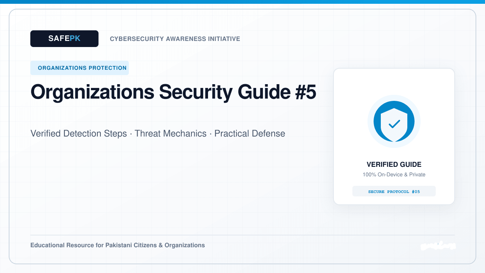
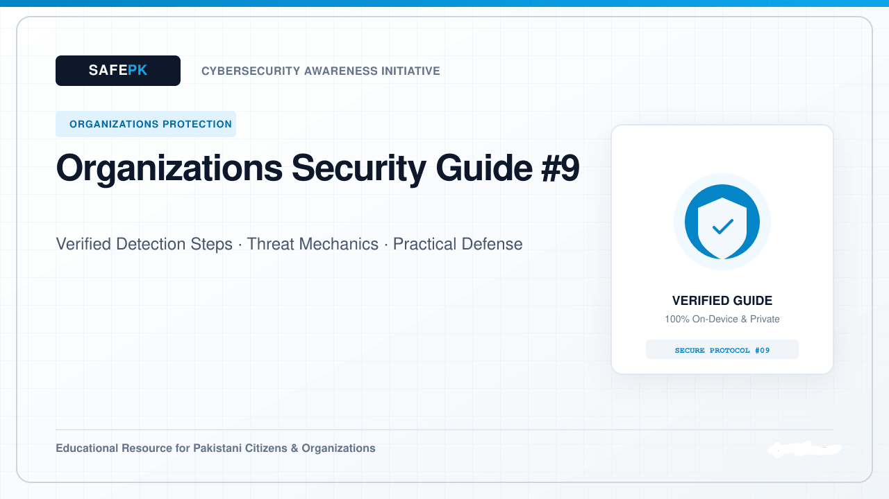
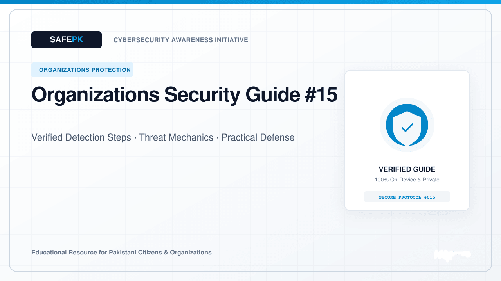

Workplace Multi-Factor Authentication: Moving from SMS Codes to Modern Passkeys
How organizations can strengthen staff logins by adopting authenticator apps, passkeys, and hardware security keys.
Cybersecurity awareness and practical guidance for protecting people, systems, and digital operations.
How organizations can strengthen staff logins by adopting authenticator apps, passkeys, and hardware security keys.
Protecting finance and procurement teams from spoofed supplier emails and unverified bank account change requests.
Standardizing account creation and timely access removal when staff join, change roles, or depart the organization.
Ensuring employees only have access to the specific files and systems required for their daily responsibilities.

Keeping company laptops and desktops protected with full-disk encryption, automated updates, and endpoint monitoring.
Protecting organizational databases and operational records with automated, offline, and immutable backup systems.
How to run encouraging, practical cybersecurity awareness sessions that empower employees to spot and report suspicious messages.
Balancing employee privacy with company data protection using containerized work profiles and clear mobile device guidelines.

Best practices for reviewing cloud sharing defaults, administrator roles, and third-party app integrations across business cloud platforms.
Assessing data protection practices and access permissions across external software providers, agencies, and contractors.
A calm, coordinated playbook for technical leads and management when an unexpected system issue or unauthorized access occurs.
Designing clean, segmented office networks where visitor Wi-Fi, staff computers, and core servers remain safely separated.
Preventing accidental file oversharing and managing external guest access across company chat and document platforms.
Implementing practical safeguards to keep customer CNIC records, financial spreadsheets, and proprietary documents confidential.

Integrating automated code checks, dependency updates, and secret scanning into your engineering team workflows.
Protecting office workspaces through visitor sign-in procedures, automatic screen locks, and secure handling of printed documents.
A practical overview of aligning organizational data protection and security governance with Pakistani regulatory frameworks.
Establishing reliable, predictable update schedules for operating systems, browsers, and network equipment across your organization.
How leadership teams can communicate clearly, accurately, and responsibly with clients, partners, and staff during a service disruption.
How to scope, schedule, and review authorized third-party security assessments to identify and fix configuration gaps proactively.